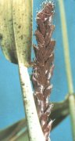

Búza porüszög
Ustilago nuda
A gombabetegség virágfertőző, a virágzó növényt szél útján fertőzi meg (virágfertőző). A kalász a fertőzés után üszögspórák tömkelegévé porlik. A fertőzés után csak a csupasz kalászorsó marad meg. A kórokozó vastag falú teliospórával telel át.
Védekezés:
- csávázás gombaölő szerekel (Quinolate-V-4-X, Sportak, TMTD, Prelude)